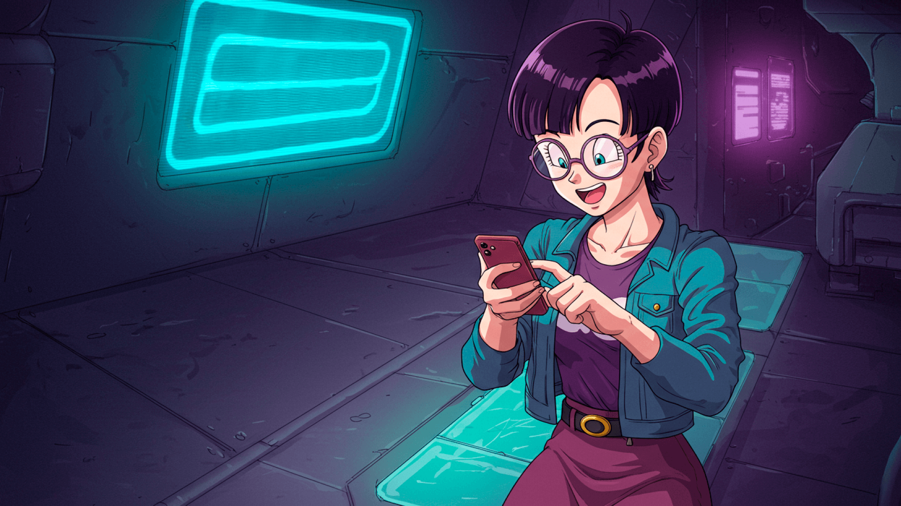
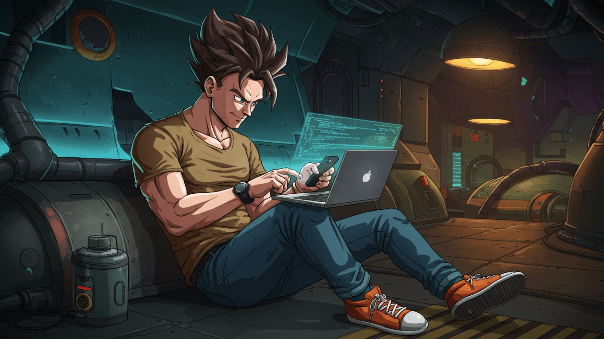
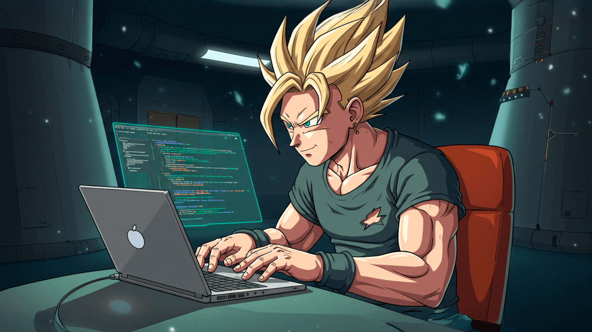

Cyberstorm
Kael Takeda, conhecido no submundo digital como "Cyberstorm", é um programador prodígio especializado em segurança cibernética e inteligência artificial. Com um intelecto afiado e reflexos rápidos, ele domina linguagens de programação como se fossem extensões de sua própria mente.

CodePixie
Lía Nakamura, conhecida como "CodePixie", é uma programadora genial que domina o desenvolvimento de algoritmos e inteligência artificial. Com um talento nato para decifrar padrões, ela cria sistemas inovadores e protege dados sensíveis de ameaças digitais.

HexBlade
Ryo Tanaka, conhecido como "HexBlade", é um hacker habilidoso que opera nas sombras do ciberespaço. Mestre em engenharia reversa e criptografia, ele combina força bruta e inteligência afiada para quebrar firewalls impenetráveis.

NeonPulse
NeonPulse Ayla Vega, conhecida como "NeonPulse", é uma prodígio da programação espacial. Criada em uma estação orbital, ela domina linguagens de código como se fossem sua segunda língua. Especialista em inteligência artificial e segurança cibernética.

Codebreaker
No coração de uma estação espacial abandonada, Orion Vex, um ex-engenheiro cibernético, busca desvendar um código perdido há séculos. Dizem que esse código guarda o segredo para uma tecnologia ancestral capaz de redefinir a inteligência artificial